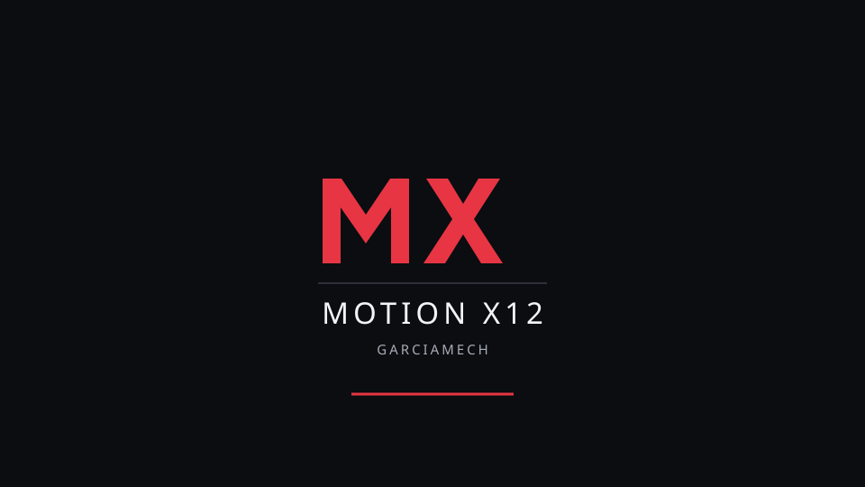

DESKTOP RECOVERY
The browser stopped or reached its retry limit. Its recovery does not restart the controller application or change the motion runtime.
Application and machine status have not been observed here. Open the local workspace separately to inspect current evidence. Review the browser or display fault before deliberately retrying the desktop.
Read-only recovery report: python3 -m controller_os kiosk-recovery --allow-development
Development overlay · boot, display and physical runtime qualification pending